Nyzo version 615 (commit on GitHub) further improves management of nodes in ClientNodeManager, reducing all scores regularly to remove nodes that do not receive regular reinforcement in MeshResponses.
This version affects the client only.
Version 614 provided significant robustness improvements in client blockchain tracking. However, over time, out-of-cycle or unresponsive nodes would accumulate in the ClientNodeManager. This results in more unsuccessful fetches and generally looser blockchain tracking.
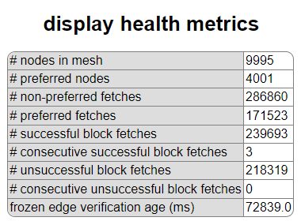This behavior is acceptable, but it is not ideal. With the changes in this version, the number of tracked nodes tends to be more reasonable, the proportion of unsuccessful fetches tends to be lower, and blockchain tracking tends to be tighter.
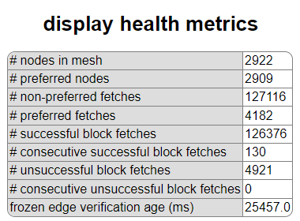In ClientNodeManager, the maximum score was changed from 10 to 40, and the successIncrement and failureDecrement were both changed in magnitude from 1 to 4. This scaling allows the leakDecrement to be one quarter of the magnitude of successIncrement and failureDecrement while retaining the integer data type for scoring.
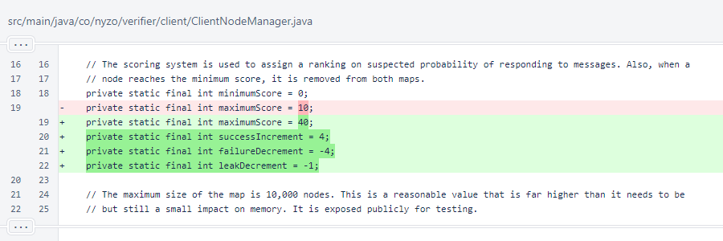Each time a mesh response is processed, every node's score is decremented by 1. In order to maintain its place in the ClientNodeManager over a long period of time, each node must be returned in at least 1 of every 4 mesh responses.
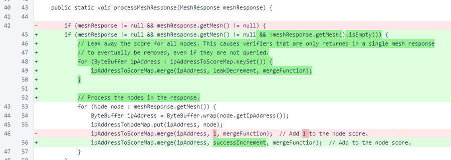The last part of the ClientNodeManager.processMeshResponse() method was split into the ClientNodeManager.updateMapsAndLists() methods. This is a natural separation, and it also facilitates testing.
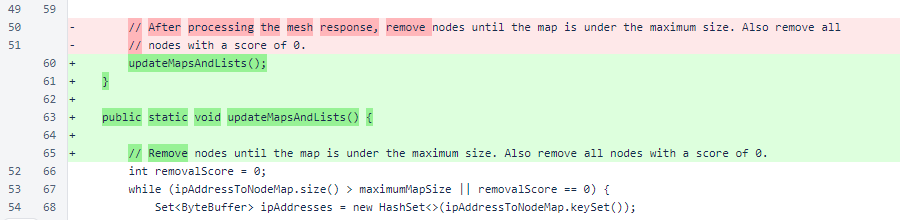In ClientNodeManager.updateMapsAndLists(), a section was added for removing stray scores.
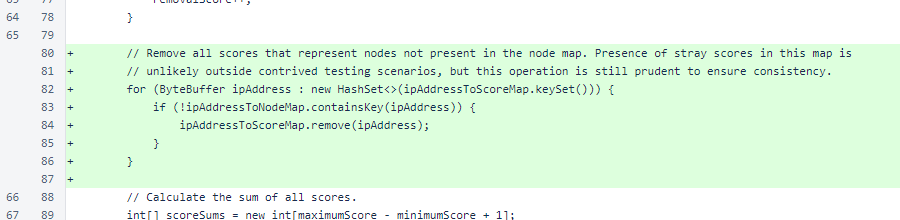The ClientNodeManager.markSuccess() and ClientNodeManager.markFailure() methods were updated with the increments scaled to the new scoring range.
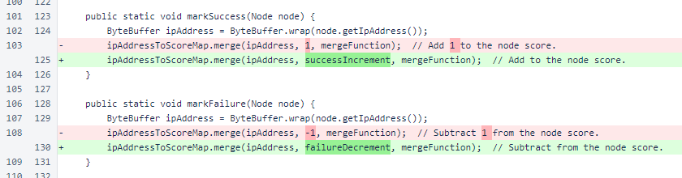Changes were required in ClientNodeManagerTest to account for the modified ClientNodeManager behavior. When adding non-overlapping batches of nodes, the initial batches quickly fall away, and the newer batches cluster as preferred.
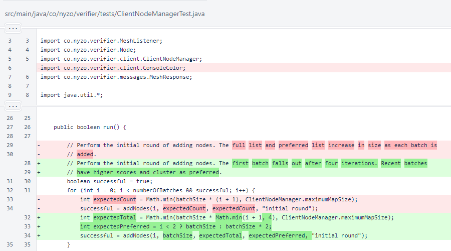This behavior, of older batches falling away and newer batches clustering as preferred, continues with the second round of additions.
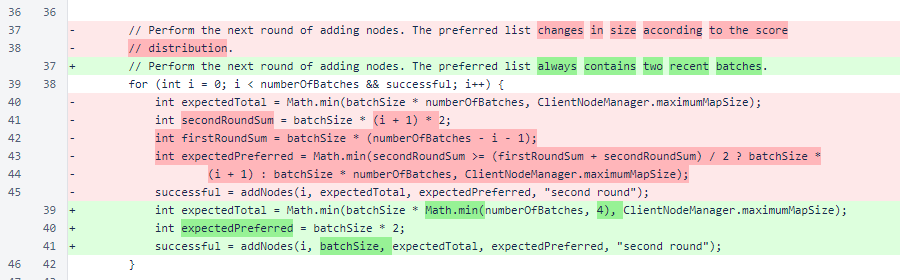Successes are now marked on the lowest-scored batch, causing it to become preferred and then to become the only batch in the preferred range.
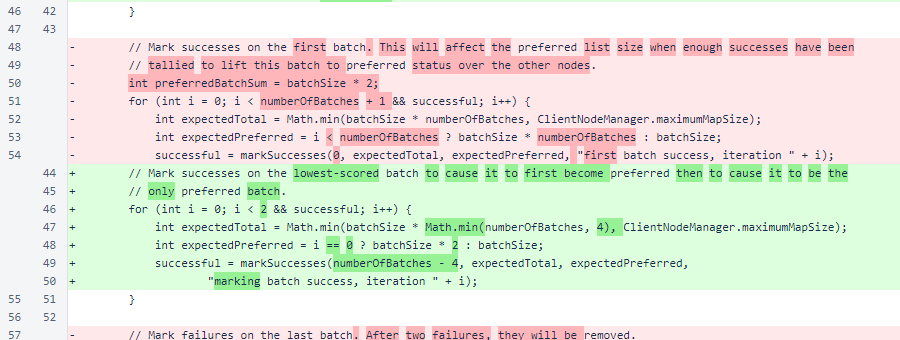Due to score leakage, only one failure is now required to remove the last batch.
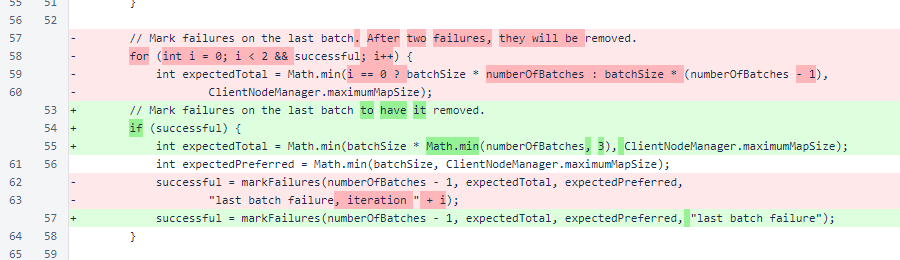Instead of adding many batches of nodes to test the map size limit, a single large batch is now added.
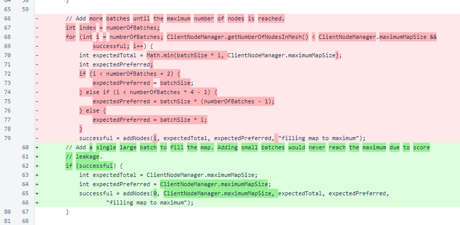The ClientNodeManagerTest.addNodes() method now accepts a batchSize argument.
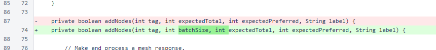The ClientNodeManagerTest.markSuccesses() method uses the new ClientNodeManager.updateMapsAndLists() method to update these data structures without processing an empty mesh response.
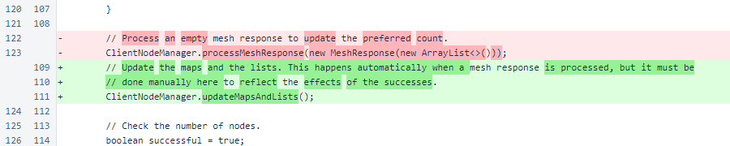The ClientNodeManagerTest.markFailures() method also uses the new ClientNodeManager.updateMapsAndLists() method.
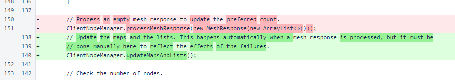